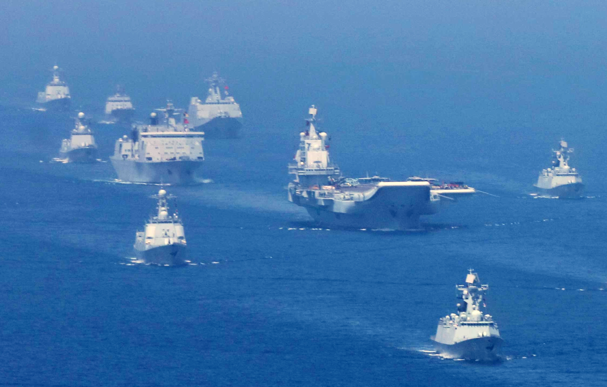
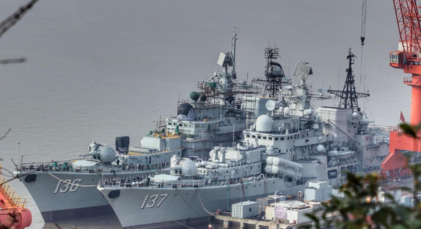
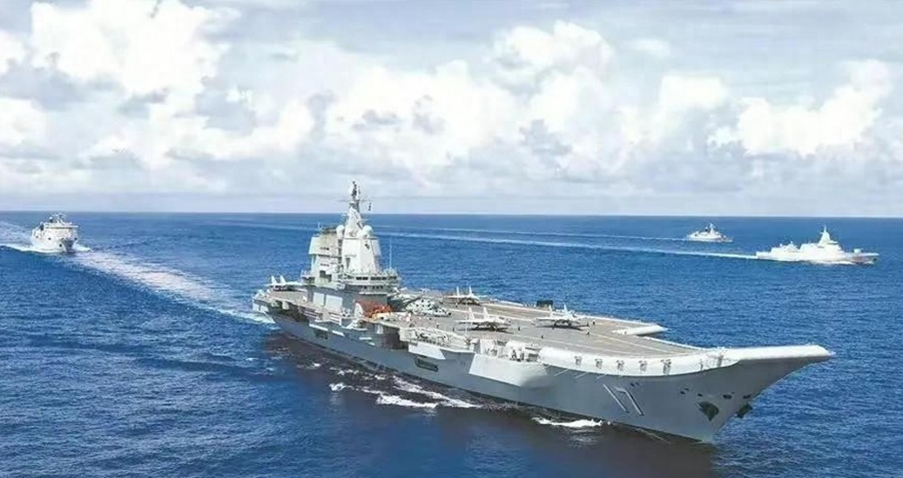

“海上军团”——舰队

*参与2018年海上阅兵式的中国舰队
简介
舰队是海军中最大的编制单位，舰队思想的形成标志着 协作海战思路的进一步扩大。
中国舰队
中国目前共有三个舰队，分别是：北海舰队、东海舰队、南海舰队。

*“五舰同框”的北海舰队
北海舰队，前身为为华东解放军海军支队，作为御林舰队， 其在过去很长一段时间内曾经是中国人民解放军海军三支舰队中实力最强、 装备最为精良的一支。 北海舰队的司令部驻地在山东省青岛市，海上防区为连云港以北的黄海海域和渤海湾。 主要任务为保卫首都北京的海上门户及警戒周边地区对中国的海上威胁。 北海舰队拥有我国第一艘航母-“辽宁”号。
东海舰队东海舰队是解放军的第一支海军，其前身为华东军区海军， 于1949年4月23日在江苏省泰州白马庙成立。 东海舰队负责防卫中国东海水域的安全。司令部设在浙江宁波。 受东海舰队的特殊的地理位置影响，其活动范围被第一岛链限制，所以 并未配备航母与055型驱逐舰，因而被戏称为“三队垫底”，事实上， 东海舰队拥有两艘075型两栖登陆攻击舰，几乎达到轻航的水准。 同样，受海域深度的影响，东海舰队也未配备核潜艇。

*停泊于舟山港的东海舰队
南海舰队的前身是广东军区江防司令部，成立于1949年12月15日，由广州市军事管制委员会海军接管处、两广纵队第2师和粤赣湘边纵队的部分人员组成，司令员和政治委员由广东军区副司令员洪学智兼任。 1950年12月3日，增调陆军第58军第173师师部和第四野战军补训第2师的部分人员，扩建成中南军区海军。 南海舰队负责防卫南中国海水域，特别是南海诸岛的安全。司令部设在广东湛江。 南海舰队曾参与了对南越的西沙之战、对越南的赤瓜礁海战并取得丰硕战绩。 涌现出战斗英雄麦贤德、杨志亮等英模和中建岛“天涯哨兵”、“爱民抢险七勇士”等英模群体。 南海舰队拥有我国完全自主生产的航母-“山东”号，同时，即将服役的“福建”号也将部署于南海舰队。

*群星闪耀的南海舰队